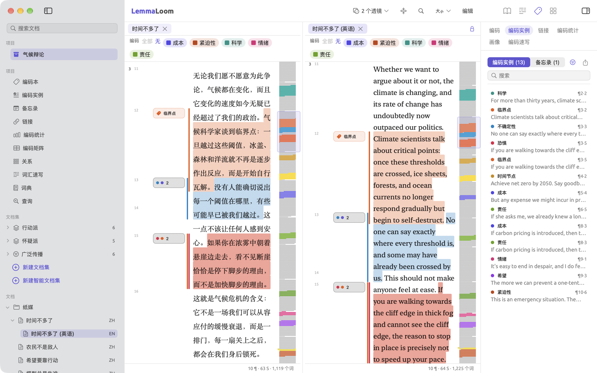
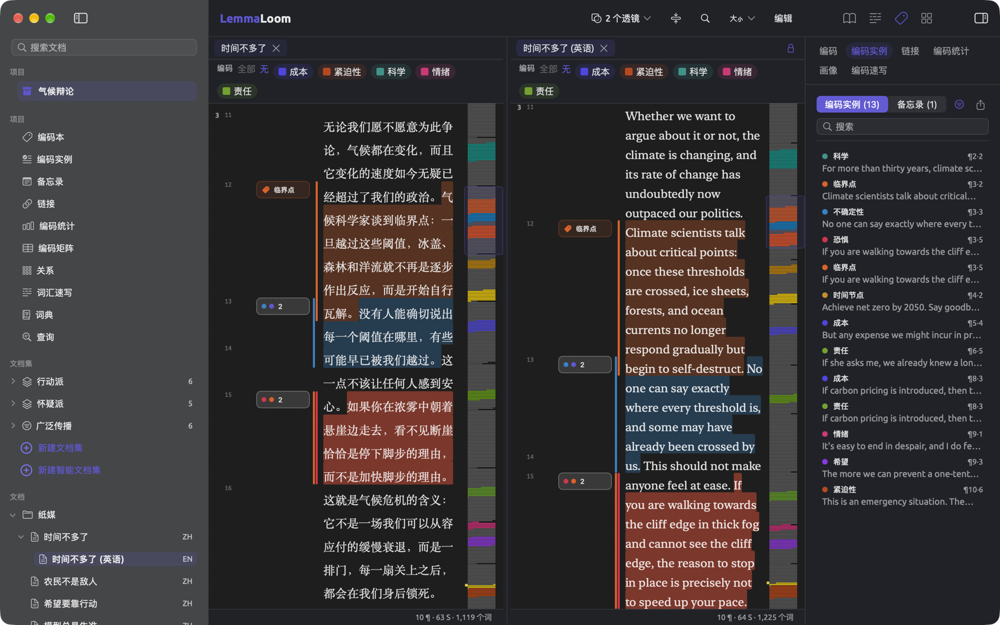
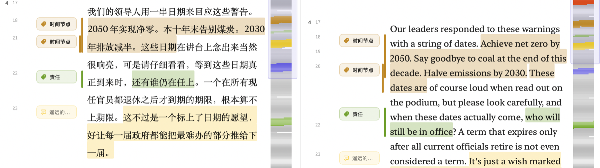
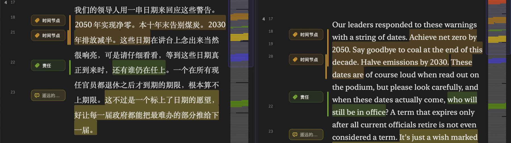
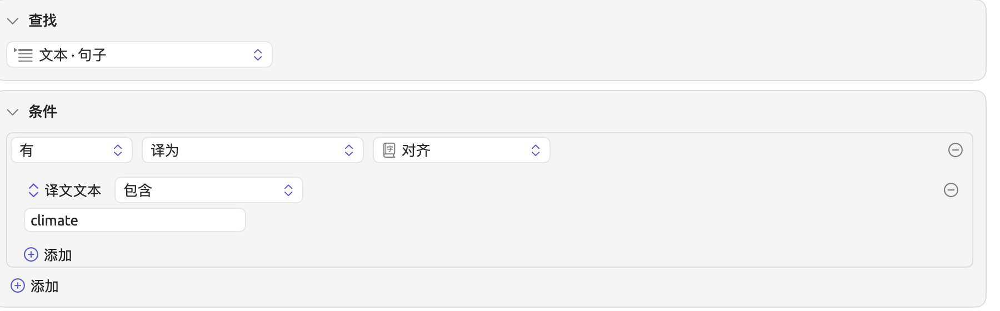

译文与分屏浏览
LemmaLoom 可以把文档翻译成其他语言。翻译一个文档时，译文会作为一个独立的文档保存，显示在导航栏中原文的下方。这个新文档可以像其他文档一样阅读、编码和查询。此外，在一个语言版本中添加的所有编码实例、备忘录、书签和链接，都会复制到其他语言版本中。
当 LemmaLoom 的语法分析不支持某种语言时，可以改用译文。例如，LemmaLoom 只为英语、德语和中文建立索引，所以一篇西班牙语评论文章可以阅读和编码，而它的自动中文译文则可以用透镜和词汇速写来分析。你也可以用译文把文本与它在另一种语言中的措辞相比较，或者在阅读用你不太熟悉的语言写成的材料时，把译文和原文放在一起对照。翻译文本还能让同事用他们更熟悉的语言理解你的编码。不过，从译文得到的语法结果描述的始终是机器译文的措辞（见本章后文的分析中的译文）。
本章的所有示例都来自 LemmaLoom 的示例项目“气候辩论”，可以通过文件 ▸ 导入 ▸ 示例项目获取（见第 1 章“简介”中的示例项目）。在示例项目“气候辩论”中，中文的行动派评论文章“时间不多了”有一份英文译文，标题为“时间不多了 (英语)”。原文中的编码实例，以及一条备忘录、一个书签和一个链接，都已带入译文。
关键术语
- 在 LemmaLoom 中，原文是你导入的文档，译文则是 LemmaLoom 根据原文生成的文档。只有原文才能翻译，一个原文可以有多种语言的译文。你自己导入的译文是普通文档，因为只有 LemmaLoom 生成的译文才属于某个原文。
- 一个文档的语言版本是指它的原文和所有译文。“时间不多了”和“时间不多了 (英语)”都是同一篇评论文章的语言版本。
- 对齐把原文中的每个句子与译文中的对应部分一一配对。LemmaLoom 在翻译时建立对齐，用来正确放置标注，并让两个语言版本同步滚动。
- 每当你用编码实例、备忘录、书签或链接标注文档的某个语言版本，LemmaLoom 都会在其他语言版本中添加相应的标注，这样添加的标注称为副本。
- 分屏浏览把阅读器分成左右并排的两个窗格，即左侧窗格（也称主窗格）和右侧窗格。前者保留标签页栏，后者显示一个文档，顶部有自己的标题条。当前窗格是你最近一次点按的窗格。检查器和菜单栏中的命令作用于哪个文档，也由当前窗格决定。
翻译文档
LemmaLoom 使用 macOS 内置的翻译功能。第一次在某两种语言之间翻译时，需要通过 macOS 下载这两种语言。
可用的语言取决于你的 macOS 版本。如果译成英语、德语和中文以外的语言，得到的文档可以照常阅读、用搜索栏搜索、编码和添加标注。透镜、语法视图和词汇速写需要英语、德语或中文（见第 21 章“分析与索引”中的其他语言）。
生成译文
“时间不多了 (英语)”是“气候辩论”项目中那篇中文评论文章的译文。下图显示的是翻译对话框，已设为把怀疑派的评论文章“净零代价高昂”译成英语。
要生成译文：
- 在导航栏中右键点按文档，然后选取翻译；或者选中文档，再选取项目 ▸ 翻译。这个命令只适用于原文。
- 翻译对话框在文档下显示文档的标题，在源语言下显示它的语言。在目标语言下选取要译成的语言。
- 点按翻译。
- 如果 macOS 还没有下载这两种语言，它会询问是否下载。请确认下载。macOS 准备语言期间，翻译一直不可用；语言准备好后，对话框关闭，翻译随即开始。
如果你的 Mac 上已经有这两种语言，点按翻译后对话框会立即关闭。
翻译在后台进行。导航栏中原文的下方会新增一行，显示语言名称。翻译等待开始时，这一行显示旋转指示器；翻译进行时，显示进度环。翻译成功完成后，LemmaLoom 用新文档（例如“净零代价高昂 (英语)”）替换这一行。接下来开始建立索引，在此期间译文的透镜菜单不可用（见第 21 章“分析与索引”中的无需分析即可使用的功能）。
“翻译”对话框
源语言显示文档的语言。这个语言是导入时选择的，或者是 LemmaLoom 在导入时识别出来的。如果语言不对，请在翻译之前通过文档信息改正（见第 3 章“项目与文档”中的文档信息）。
目标语言列出 macOS 支持译成的所有语言，按名称排序。列表中不包括文档本身的语言，也不包括文档已经译成或正在译成的语言，因为一个原文每种语言只能有一份译文。一开始，LemmaLoom 会按照你在系统设置的通用 ▸ 语言与地区中设定的首选语言，选中第一种 macOS 支持的语言；如果一种也没有，就默认选择英语；英语也不可选时，选择目标语言菜单中的第一项。
如果 macOS 不提供任何合适的可译成语言，这个菜单显示不支持；如果已经没有可供选择的语言，目标语言菜单显示已全部翻译。如果 macOS 不支持在所选的两种语言之间翻译，源语言和目标语言的正下方会出现这些语言之间无法翻译。
如果翻译不可用，将鼠标指针悬停在它上面，可以看到它无法使用的原因：
| 原因 | 处理方法 |
|---|---|
| 正在加载 | 等待 LemmaLoom 向 macOS 查询它提供哪些语言，或者能否在所选的两种语言之间翻译。 |
| 未选择语言 | 在目标语言下选取一种语言。 |
| 不支持 | macOS 不提供任何可译成的语言，或者无法从文档的语言翻译。如果源语言不对，请在文档信息中改正。 |
| 已全部翻译 | 每种可选的语言都已经有译文。要再次译成其中某种语言，请先删除它的译文（见本章后文的重新翻译）。 |
| 正在准备 | 等待 macOS 下载语言。 |
如果下载失败，或者你拒绝下载，对话框中的字段下方会以红色显示一条说明。之后你可以再次点按翻译。
语言下载
macOS 用来翻译文本的语言，由你的 Mac 上所有具备翻译功能的应用共用。在系统设置的通用 ▸ 语言与地区 ▸ 翻译语言中，你可以查看已经安装了哪些翻译语言，并移除不再需要的语言。
如果在某个翻译尚未完成时删除了它所用的其中一种语言，这个翻译就会失败。请再次翻译这个文档，macOS 会再次提示你安装这种语言。
翻译质量与内存
对于许多语言对，macOS 除了默认的翻译模型之外，还提供一个更大、质量更高的模型。只要所选的两种语言都有这个较大的模型，LemmaLoom 就使用它；否则使用默认模型。
较大的模型运行时需要数 GB 的内存。在总内存为 8 GB 的电脑上，较长的翻译可能会明显拖慢其他文档的索引，以及 LemmaLoom 之外其他应用的运行。一般来说，请在完成转写和大量文本的导入之后，再开始较长的翻译。
跟踪翻译进度
LemmaLoom 一次只翻译一个文档。如果你开始了多个翻译，它们会排队，依次进行。窗口 ▸ 活动（⌥⌘0）把它们列在正在翻译下，每一行显示译文将使用的标题（例如“净零代价高昂 (英语)”）以及文档所属的项目。翻译开始之前，这一行显示等待中；翻译进行时，显示完成的百分比，例如正在翻译 40%。
如果翻译失败，它会移到“活动”窗口的失败部分，并显示原因。它在导航栏中的那一行会消失，翻译对话框中也会重新提供这种语言。点按重试，可以重新开始翻译这个文档。
只有在你没有删除这些语言时，重试才有效。如果已经删除，就必须从导航栏重新开始翻译，macOS 会提示重新下载。失败的翻译会一直留在“活动”窗口中，直到你重试、删除原文或退出 LemmaLoom。
如果退出 LemmaLoom 时还有翻译在等待或正在进行，它会被取消，之后需要重新开始翻译。
文本是怎样翻译的
LemmaLoom 的翻译功能使用 macOS 的翻译器，逐句翻译你的文本。LemmaLoom 先按换行把文本分开，再把每一部分分成单独的句子。如果文本是音频或视频文件的转写文本，LemmaLoom 会先按转写片段分开，再分成句子。每个句子单独翻译，然后按原来的顺序重新拼合：
- 输出中保留段落和换行。
- 文本中的每个句子都译成译文中连续的一段文字。对齐记录的就是这种对应关系。
- 译文中的句子之间用一个空格隔开；中文等词与词之间不加空格的语言除外，这些语言的句子直接相连。
- macOS 无法翻译的句子保留原文的语言。
翻译软件在翻译时只看到当前这一个句子，所以代词等依赖上一句的词可能会译错。跨两行断开的句子（例如每行末尾都有换行的文本文件中的句子）会被分成两段翻译。因此，请在翻译之前，先在原文中合并这样的行，并改正其他错误（见第 5 章“阅读与编辑”中的编辑文档文本）。
音频或视频文档的译文播放原文文档的媒体文件，并保留按说话人划分的片段及其时间。例如，把“电台辩论”译成英语，译文会列出“主持人”“活动人士”和“怀疑论者”各自的发言，从英文文本的任何一段都可以播放录音。
项目中的译文
译文显示在哪里
译文显示在导航栏文档部分中原文的下方。例如，在“气候辩论”中，“时间不多了 (英语)”位于分组“纸媒”中的“时间不多了”下方。译文的名称由原文的名称加上括号中的语言组成，可以像其他文档的名称一样修改。在搜索文档栏中搜索，既能找到原文，也能找到译文。译文的标题以语言结尾，所以搜索英语会返回项目中所有的英语译文，除非你给它们改过名。
点按原文旁的展开三角形，可以收起或展开它的译文。在导航栏中，文档集下只列出原文，文档集或标签旁边的计数也只包括原文（见本章后文的分析中的译文）。
译文与原文共用的内容
在 LemmaLoom 中翻译文档时，译文会从原文得到作者、日期、出版方、出版物名称、URL、DOI、颜色、所在分组、标签和属性值。
所有语言版本共用以下内容：
- 标签。为“时间不多了 (英语)”添加标签，“时间不多了”也会加上这个标签，反之亦然。
- 属性值。在任何一个版本的文档信息中设置“读者数”，所有语言版本都会得到同样的值。
- 所属分组。把“时间不多了”移到分组“网络”中，它的英文译文也会自动移过去。
- 所属文档集。文档集的成员是原文，译文跟随原文。
- 适用范围为某个文档或某个文档集的编码。适用范围为文档并指定“时间不多了”的编码，也可以在“时间不多了 (英语)”中使用；只适用于文档集“行动派”的编码，也可以在行动派文本的译文中使用（见第 7 章“编码”中的编码的适用范围）。
- 编码实例、备忘录、书签和链接，通过副本共用。本章后文的两种语言中的标注会更详细地介绍语言版本之间的副本。
其他内容由每个语言版本各自保留：
- 标题、作者、日期、出版方、出版物名称、URL、DOI 和颜色；
- 语言；
- 文本，以及你对它所做的编辑；
- 索引，包括它的透镜、统计数据和语法视图。
在译文中工作
英语、德语或中文的机器译文，与其他导入的文档一样建立索引。机器译文有自己的透镜，在检查器中也有各自独立的文本、语法、编码和多重模式标签页，和往常一样，多重模式下的查询只读取译文本身。
机器译文常常需要少量编辑，例如同一个术语被译成了两种说法，或者有的句子译得不知所云。编辑译文的方法与编辑普通文档相同。选取文档 ▸ 编辑（⇧⌘E），编辑文档，然后点按存储按钮。编辑时，对齐会和标注一起移动，所以两种语言在编辑之后仍能正确对应（见第 5 章“阅读与编辑”中的标注如何跟随编辑）。
编辑始终只影响同一文本的一个语言版本。如果你编辑了原文，要根据编辑后的文本生成新的译文，必须先删除原来的译文（见本章后文的重新翻译）。
导出中的译文
把原文导出为 LemmaLoom 归档时，它的译文也会一起导出。因此，导出“时间不多了”时，得到的归档中也包括“时间不多了 (英语)”。REFI-QDA 项目则把译文当作一个单独的文档。如果在交换时必须保留两者之间的关系，请选择 LemmaLoom 归档。更多信息见第 22 章“交换与导出”中的导出文档。
对照原文阅读译文
把两个版本并排比较，你可以在使用某段译文之前，先检查 macOS 是怎样翻译它的。细读原文时，你也可以这样把译文开着作为参照。用这种方式还可以比较两个版本的编码实例。
下图左侧是“时间不多了”，右侧是“时间不多了 (英语)”，两者同步滚动。译文位于当前窗格，所以检查器显示它的 13 个编码实例，它们与原文的编码实例一一对应。


要对照原文阅读译文：
- 在导航栏中右键点按译文，然后选取在原文旁边打开；或者在导航栏中选中译文，或让它成为阅读器中的当前文档，然后选取窗口 ▸ 在原文旁边打开。原文在主窗格的一个标签页中打开，译文在右侧窗格中打开，右侧窗格成为当前窗格。
- 要让两者同步滚动，请点按右侧窗格标题条右端的锁形按钮同步滚动，或者选取显示 ▸ 同步滚动（⌥⌘L）。
如果右侧窗格原先显示着另一个文档，译文会取代它。
分屏浏览
分屏浏览让你同时查看两个文档，例如把代表辩论中两种对立观点的“时间不多了”和“净零代价高昂”并排放置。
并排打开两个文档
在右侧窗格中打开文档有以下几种方法：
- 在导航栏中右键点按一个文档，然后在出现的快捷菜单中点按在分屏浏览中打开。这个文档会在右侧窗格中打开，位于主窗格中的文档旁边。如果这个文档已经显示在主窗格或右侧窗格中，或者当前是文档集、详细视图或标签，这个选项不可用。
- 右键点按阅读器上方的标签页，然后从快捷菜单中选取在分屏浏览中打开。当前是文档时，其他包含文档的标签页都可以这样在分屏浏览中打开。这个文档会离开标签页栏，移到右侧窗格中。
- 从“窗口”菜单中选取在分屏浏览中打开，再选取要查看的文档。窗口 ▸ 在分屏浏览中打开的子菜单列出导航栏中选中的文档，以及其他文档标签页。
- 在导航栏中选中两个文档（点按一个，再按住 ⌘ 键点按另一个），然后右键点按其中任意一个，从快捷菜单中选取并排打开；也可以从菜单栏中选取窗口 ▸ 并排打开。列表中靠上的文档显示在左侧，另一个显示在右侧。
- 对于译文，可以在快捷菜单中选取在原文旁边打开，如上文所述。
右侧窗格中始终只打开一个文档，所以在那里打开另一个文档时，被替换的文档会关闭。同一个文档一次只显示在一个窗格中。
当前窗格
当前窗格的标签页（在右侧窗格中则是标题条）完全高亮显示，另一个窗格的标签页或标题条颜色较淡。在分屏浏览中打开文档时，右侧窗格成为当前窗格。点按标签页，或者选取窗口 ▸ 显示下一个标签页（⇧⌘]）或窗口 ▸ 显示上一个标签页（⇧⌘[），左侧窗格成为当前窗格。
以下各项都作用于当前窗格中打开的文档：
- 检查器；
- 标题栏中的所有工具（透镜菜单、折叠按钮、查找、显示设置和编辑）；
- 菜单命令，包括编辑 ▸ 查找（⌘F）、文档 ▸ 编辑（⇧⌘E）和文档 ▸ 自动编码…（⇧⌘A）；
- Esc 键，用来清除当前窗格中的选区，或关闭其中打开的搜索栏；
- 图示窗口（见第 11 章“语法检查器”中的图示窗口）；以及
- 词汇速写窗口中作为范围的文档。
在导航栏中，当前窗格的文档会高亮显示。在导航栏中点按一个文档，它会在左侧窗格中打开，左侧窗格随之成为当前窗格；如果这个文档已经在右侧窗格中，则右侧窗格成为当前窗格。
检查器跟随当前窗格
点按另一个窗格时，检查器会改为显示那个窗格的文档，但保留原来的标签页、分面和宽度，也保持检查器当前的显示或隐藏状态。例如，如果检查器正为“时间不多了”显示编码标签页中的编码实例分面，在“时间不多了 (英语)”中点按后，同一位置就会显示译文的编码实例。
每个窗格各自保留的内容
透镜、搜索栏、选区和滚动位置由每个窗格各自保留。在分屏浏览中，你可以启用情态透镜阅读“时间不多了”，同时启用衔接透镜阅读“净零代价高昂”。字体、文字大小、页边栏和版式由两个窗格共用。
一开始，两个窗格宽度相等。拖动它们之间的分隔条，可以改变这个比例。每个窗格都有最小宽度。分隔比例适用于你的所有项目。如果窗口太窄，容纳不下两个最小宽度的窗格，两个窗格仍然平分宽度。
左侧窗格显示项目视图栏、文档集或标签时，右侧窗格会隐藏，直到某个文档标签页再次成为当前标签页。
LemmaLoom 为每个项目记住右侧窗格中的文档。回到项目或重新打开 LemmaLoom 时，右侧窗格会照原样显示这个文档，但同步滚动处于关闭状态。
关闭分屏浏览
关闭分屏浏览的方法如下：
- 点按右侧窗格标题条中的 ×。
- 右键点按标题条，然后从快捷菜单中选取关闭分屏浏览。
- 选取窗口 ▸ 关闭分屏浏览。
- 在右侧窗格中点按，然后选取文件 ▸ 关闭标签页（⌘W）。
右侧的文档会随分屏浏览一起关闭。在分屏浏览中，如果左侧窗格是当前窗格，⌘W 照常关闭左侧的当前标签页。如果左侧只打开了一个标签页，而你关闭了它，右侧窗格中的文档会移到主窗格中。
右键点按标题条，可以选取在新窗口中打开，把文档显示在单独的“文档”窗口中，这个窗口有自己的检查器（见第 5 章“阅读与编辑”中的在单独的窗口中打开文档）。菜单栏中的窗口 ▸ 在新窗口中打开执行同样的操作，作用于当前窗格中的文档。
同步滚动
同步滚动让原文和译文在垂直方向上保持对应，你往下阅读时，对应的段落始终并排显示。两个窗格显示同一文档的两个语言版本时，右侧窗格标题条的右端会出现锁形图标。原文与译文的组合是这种情况，同一原文的两份译文也是。点按锁形按钮，或者选取显示 ▸ 同步滚动（⌥⌘L），即可让两个窗格同步滚动。锁形图标随即合上，菜单项旁出现勾号。开启之后，右侧窗格立即跳到与左侧窗格顶部那段文字对应的位置；此后滚动一个窗格，另一个会自动跟着滚动。其他任何组合下，同步滚动都不可用。
LemmaLoom 根据两个版本之间的对齐来同步滚动。它找出你所滚动的窗格顶部那一点所在的句子，然后滚动另一个版本，直到句子中对应的部分到达那个窗格的顶部。在句子内部，LemmaLoom 保持相同的比例，也就是说，中文句子的四分之一处对应它的英文译文的四分之一处。即使同一个句子在两个版本中所占的行数不同，同步也会继续。
在左侧窗格中把其他任何文档设为当前文档，锁形按钮会消失，同步滚动随之停止。原文或它的另一个语言版本重新成为当前文档时，同步滚动恢复。关闭分屏浏览会结束同步滚动。
两种语言中的标注
每个语言版本都有各自的编码实例、备忘录、链接和书签。你在“时间不多了”中为一段文字编码时，LemmaLoom 会自动把同一个编码应用到“时间不多了 (英语)”中的对应段落，反之亦然。编码之后，这些编码实例保持关联，你既可以单独分析任何一个版本，也可以比较一段已编码的文字在每种语言中读起来如何。
哪些内容会复制
为文档生成新的译文时，LemmaLoom 会把它的编码实例、备忘录、链接和书签复制到新译文中。此后，你在一个语言版本中添加新的内容时，LemmaLoom 会自动把它们复制到其他所有语言版本：
- 编码实例，连同它的编码；
- 文档备忘录或段落备忘录，连同它的文本、编码和标签；
- 书签，连同它的评论和颜色；
- 链接，连同它的关系、评论、颜色和标签（连接同一文档两个语言版本的链接除外）。
复制链接时，副本只移动位于被翻译文档中的那一端。例如，在“气候辩论”项目中，有一个链接把文档“不必恐慌”中的一段文字与“时间不多了”中的一段文字连接起来。这个链接在“时间不多了”的英文译文中的副本，从“不必恐慌”中的同一段文字连到“时间不多了 (英语)”中对应的译文段落。如果“不必恐慌”也有译文，这个链接还会有另外两个副本，从那份译文中的对应段落分别连到“时间不多了”和“时间不多了 (英语)”。
“时间不多了”中两段文字之间的链接，会复制为英文译文中相应两段文字之间的链接。
用编辑 ▸ 撤销（⌘Z）可以一步撤销标注及其副本。此外，用自动编码…生成的编码实例也会复制到你的各个译文中。见第 7 章“编码”中的自动为段落编码。
更改和删除副本
对标注所做的更改会自动应用到它的所有副本：
- 编辑备忘录的正文、编码或标签，会同样影响它的所有版本；
- 更改书签的评论或颜色，或者链接的关系、评论、颜色或标签，会同样影响所有副本；
- 为编码实例设置的属性值同样适用于它的所有副本。
如果在一个文档中删除标注本身，它的所有副本会同时被删除；删除“时间不多了 (英语)”中那个句子上的“紧迫性”编码实例，“时间不多了”中的这个编码实例也会被移除。
不过，标注的位置属于各自的文档。编辑文本的某个版本时，你的标注会相应移动（见第 5 章“阅读与编辑”中的标注如何跟随编辑）；这些标注在其他版本中的副本则保持原来的位置。
副本存放在哪里
副本根据句子对齐放置，句子对齐把文本两个版本中的句子一一配对。因此，副本会被放进正确的对应译文句子中。
覆盖整句的标注会原样准确复制。如果标注只覆盖句子的一部分，LemmaLoom 会计算这段文字的起点和终点分别位于句子长度（按字符计）的多大比例处，然后按这个比例把副本放在译文句子中相应的位置：
表示原文句子中所选文字的起点（或终点）之前的字符总数，空格和标点都算在内。用它除以 （这个句子以字符计的长度），得到比例 。再乘以译文句子的长度 （读作“L 撇”），就得到 （读作“q 撇”），也就是译文句子中的位置。这个数四舍五入为最接近的整数，小数部分恰好是 0.5 时总是向较大的整数取整。在用空格分隔词的语言中，副本随后会扩展为完整的词。此外，任何副本开头和结尾的空格都会被去掉。
以下面这个取自“时间不多了”的句子为例：
这些日期在讲台上念出来当然很响亮，可是请仔细看看，等到这些日期真正到来时，还有谁仍在任上。
它的英文译文是：
These dates are of course loud when read out on the podium, but please look carefully, and when these dates actually come, who will still be in office?
中文句子连同标点共 45 个字符，英文句子连同空格和问号共 151 个字符。假设第一个句子中的这些日期用“时间节点”编码。它位于句首，前面没有字符，本身有 4 个字符。所以这段文字从句首开始，到第 4 个字符之后结束：
四舍五入后为 0 和 13，所以副本在第二个句子中从开头开始，到第 13 个字符（含）为止，即 These dates a。把副本扩展为完整的词后，得到 These dates are。
另一段已标注的文字是还有谁仍在任上，用“责任”编码。这段文字从第 37 个字符之后开始，到第 44 个字符为止。由此得到位置 和 ，四舍五入为 124 和 148。副本从第 124 个字符之后开始，即 who 的中间，一直到第 148 个字符为止，即 office 的中间。扩展为完整的词后，副本覆盖 who will still be in office。
这些日期在中文句子中所占的比例，比 These dates 在英文句子中所占的比例略大，所以扩展后的副本 These dates are 多带上了 are。尽管如此，副本仍在正确的句子中。还有之前的文字在中文句子中所占的比例，比 who 之前的文字在英文句子中所占的比例略大，所以第二个副本开始得晚了一个字母，扩展为完整的词后仍从 who 开始。每个文档的编码实例计数，以及查找带有某个编码的句子的查询，都仍然准确。


如果你的研究方法允许，请尽量为完整的句子编码，因为整句的副本是准确的。对于较小的选区，请用副本来找到相应的句子，因为副本覆盖的词可能与你编码的词不同。
删除原文和译文
要删除原文或译文，请右键点按它，选取删除文档，然后在确认对话框中点按删除。（见第 3 章“项目与文档”中的删除文档。）
删除译文只会移除这一份译文：
- 它的编码实例、备忘录、书签和链接会被删除；原文和其他译文中对应的编码实例、备忘录、书签和链接保留。
- 译文与原文之间的链接会被删除。
- 适用范围设为这份译文的编码，此后改为指向原文，可以在原文及其其余译文中使用。
- 对于录音，媒体文件会保留，因为原文本身也在使用它。
如果删除原文，它的所有译文会一并删除，尽管确认对话框中只提到原文。如果原文还有尚未完成的翻译在“活动”窗口中等待，这个翻译会立即取消。不过，正在进行的翻译仍会运行完毕，然后“活动”窗口把它列在失败下，并显示找不到文档。
撤销操作编辑 ▸ 撤销删除文档（⌘Z）可以恢复被删除的文档，包括它的译文和标注。
重新翻译
如果要根据原文的改动更新译文，或者想重新翻译，请删除现有的译文，再根据原文生成新的译文。这样会清除你对旧译文所做的所有编辑、你改过的标题，以及它与原文之间的所有链接。
- 右键点按译文，选取删除文档，然后点按删除。
- 右键点按原文，选取翻译，然后在目标语言下选取同一种语言。
- 点按翻译。
你在旧译文中添加的每个标注，在原文中都已有副本，所以新译文会继承所有标注，并按新的对齐放置。
分析中的译文
分析一个文档集乃至整个项目时，除非你另行指定，分析只考虑原文。针对单个文档的分析读取的就是这个文档本身，无论它是原文还是译文；所以要单独分析“时间不多了 (英语)”，请打开它并使用检查器。
| 分析 | 读取的内容 |
|---|---|
| 检查器，以及文档多重模式标签页中的查询 | 该文档 |
| 文档集或项目的编码本、编码实例、备忘录、编码统计、编码矩阵和关系 | 原文 |
| 文档集或项目的链接 | 每个链接计一次 |
| 文档集、项目或所有项目的查询 | 原文，除非你更改了语料 |
| 文档集或项目的词汇速写和速写空间 | 原文，除非你更改了语料 |
| 词典视图中的计数 | 原文 |
| 文档集或整个项目的自动编码… | 原文。如果打开自动编码…时当前文档是译文，则读取这份译文，而不是它的原文。 |
| 智能文档集 | 原文 |
在译文中添加的编码实例，会通过它在原文中的副本计入相关视图。例如，你在“时间不多了 (英语)”中为一段文字编码时，文档集“行动派”的编码统计视图会把它记为一次，计在“时间不多了”中。删除或合并编码时的确认对话框是例外，其中副本和原标注都会计算在内。“时间不多了”中的一个“紧迫性”编码实例和它在“时间不多了 (英语)”中的副本，在这些对话框中显示为两个编码片段。
把译文加入文档集时，加入的是它的原文（见第 8 章“文档集、分组、标签和属性”中的译文）。
从译文得到的结果反映的是 macOS 的措辞。翻译可能添加或去掉模糊限制语和情态动词，也可能改变语序。建议用这些结果找出段落，然后回到原文中细读这些段落。
查询中的“语料”选项
在文档集和项目的查询视图中，以及在窗口 ▸ 查询中，选项条件顶部显示原文的菜单用于设置语料（见第 15 章“构建查询”中的选项）。如果原文使用英语、德语和中文以外的语言，你可以选择译文，通过译文查询它们的语法；也可以选择两者，得到每个语言版本中的结果。
- 原文是默认的语料，读取所设范围内的文档。
- 译文改为读取这些文档的译文，包括它们被译成的每一种语言。
- 两者同时读取原文和译文。
LemmaLoom 根据原文确定范围。在“气候辩论”中，把语料改为译文后，针对文档集“行动派”的查询读取行动派文本的译文，在这里就是“时间不多了 (英语)”。文档多重模式标签页中的查询只读取它自己的文档。
两者表示原文及其译文，所以一条标注和它的副本是两个结果。例如，以编码“紧迫性”查询编码实例时，原文“时间不多了”中的编码实例和译文“时间不多了 (英语)”中对应的编码实例都会被找到。
如果原文有多种语言的译文，译文和两者会把这些语言混在一起。在条件中添加规则语言 是以下任一 英语，就只保留英语译文。
在关键词列表比较中，两边也都取决于语料，所以选择译文时，两边都由译文组成（见第 16 章“查询结果与统计”中的关键词）。
查询会保存你的选择。把查询结果导出为 Markdown 时，来源记录会在语料下列出它（见第 16 章“查询结果与统计”中的附带来源记录的 Markdown）。
文档字段是译文可以用来区分原文和译文。在项目的查询视图中把语料设为两者，再以规则是译文 为真查找资料库 · 文档，就会列出所有译文文档。智能文档集只作用于原文，所以它提供的是有译文；把规则设为为真，就会得到有译文的原文文档。
词汇速写中的译文
在 LemmaLoom 中为文档集、标签或项目生成词汇速写或速写空间时，读取的是原文。如果范围中有文档带有英语、德语或中文译文，顶部栏中输入词的字段后面会出现一个菜单。它起初显示原文。在这个菜单的语料下，你可以在原文和每种译文语言之间选择。词汇速写一次只分析一种语言的文本，所以每种译文语言各有一个选项。例如，在“气候辩论”中，译文选项是译文（英语），对应“时间不多了 (英语)”。在词汇速写窗口中，同一个菜单还用来设置范围，并同时显示两者，例如“气候辩论” · 原文。
所选的语言决定包括哪些译文。选择一种语言后，请用这种语言输入词，在这里就是输入 climate，而不是气候。
有关词汇速写的更多信息，见第 12 章“词汇速写”；有关速写空间的更多信息，见第 14 章“速写空间”。
根据译文查找段落
你也可以查询对齐本身，例如你知道某段文字在译文中怎么说，想在原文中找到它。比如，你可能想知道“时间不多了”中哪些中文句子的译文含有 climate 这个词。
查找菜单中的单位译文 · 对齐，为每一个句子与其译文组成的句对返回一个结果。返回的字段是原文文本、译文文本和译文语言。原文文本始终是你所查询的文档中的句子，另外两个字段描述与它配对的句子。在原文文档中，配对的是译文，每种译文语言各产生一个结果；在译文文档中，配对的是原文的句子。
如果某个结果所在句子的译文符合你的规则，上下文行中的译为关系就会保留这个结果（见第 15 章“构建查询”中的上下文）。要找出文档中译文符合某个条件（例如含有某个词）的句子：

- 打开文档。在检查器中点按多重模式，然后点按查询。
- 在查找条件中，选取文本 · 句子。
- 在条件中，点按添加，然后选取添加上下文。把这一行改为有、译为和对齐。
- 点按上下文行中的添加按钮，选取添加规则，然后选取译文文本作为字段。
- 把比较方式设为包含，并输入这个词作为值。
规则一有值，结果中就会立即列出所有符合条件的句子。
译文与分屏浏览命令
| 命令 | 快捷键 | 位置 |
|---|---|---|
| 项目 ▸ 翻译 | 也在导航栏中原文的快捷菜单中 | |
| 窗口 ▸ 在原文旁边打开 | 也在导航栏中译文的快捷菜单中 | |
| 窗口 ▸ 在分屏浏览中打开 | 也在导航栏中文档的快捷菜单中，或标签页的快捷菜单中 | |
| 窗口 ▸ 并排打开 | 也在两个选中文档的快捷菜单中 | |
| 窗口 ▸ 关闭分屏浏览 | 也在右侧窗格标题条的快捷菜单中 | |
| 窗口 ▸ 在新窗口中打开 | 也在标签页或右侧窗格标题条的快捷菜单中 | |
| 显示 ▸ 同步滚动 | ⌥⌘L | 分屏浏览中显示同一文档的两个语言版本时 |
| 文件 ▸ 关闭标签页 | ⌘W | 右侧窗格为当前窗格时关闭分屏浏览 |
| 窗口 ▸ 活动 | ⌥⌘0 | 列出等待中、进行中或失败的翻译 |